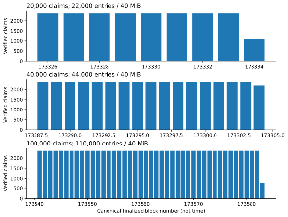

Coinage stress testing
What we measured,
and why
Five flows on a local PreviewNet, from 100 to 150,000 actors
Full report · Appendix · press S for speaker notes
Starting point
A chain is not a REST API, but we can test it like one
One round trip, and you know if it worked.
"Accepted" only means it got in the door. We only know it worked at the end.
So I took the metrics we use for REST API load tests, like JMeter's, and changed what "a response" means: a successful receipt in a finalized block.
The metrics
From JMeter to Coinage
| JMeter / REST API | What we measure in Coinage | Why it matters | |
|---|---|---|---|
| Assertion passed | → | Verified receipt + correct coin state | Did the money actually move? |
| Error % | → | No verified receipt | A lost payment is the worst outcome |
| HTTP 503 / refused | → | Pool rejections (error 1016) | What a spike looks like at the door |
| Median, 95% and 99% line | → | Finality p50 / p95 / p99 | How long people at the back wait |
| Throughput (requests/s) | → | Transactions per block | How fast a queue can drain |
| Thread group ramp-up | → | At once vs in waves; pool size | Does spreading the load help? |
| Server monitoring (PerfMon) | → | Machine CPU and memory | Did we test the chain or our tooling? |
One Coinage-only metric: readiness, when a new coin can actually be used. REST APIs have no equivalent.
The scenarios
Five flows, each a burst of signed transactions
Top-up
Pays with an external asset, gets a voucher
Claim
Transfers one coin
Split-and-claim
Splits a coin, then claims it
Recycling
Loads a coin into a recycler
Merchant fan-in
Pays one merchant
Unloads
Free quota (all six profiles) and offboarding (preliminary): cash out
Number = largest fully verified run. Each flow ran at several sizes, at once or in waves, on the default pool or a bigger one.
Result 1 · Correctness
Result 2 · Throughput
The block, not the pool, sets the speed

Every full block stopped at the block weight limit.
A bigger pool lets more claims wait. It doesn't make blocks hold more.
Result 3 · Error rate under a spike
10,000 at once on the default pool: 1 in 10 rejected
The default pool holds 9,011 (8,192 ready + 819 future). Sending in waves fixed it in every flow, and so did a bigger pool wherever we have a result.
Result 4 · Response time
Response time grows in a straight line with load

+28 s readiness p95 per extra 1,000.
A fixed number per block means the queue drains at a steady rate, so the wait grows with the queue.
Result 5 · The slowest flow
Unloads: only 23 fit in a block
- Each unload uses 62.9 ms of the 1.5 s block budget, so 23 fit and a 24th doesn't.
- 10,000 offboards at once took 56 minutes at p95. In waves, all 10,000 verified.
Result 6 · End to end
The whole lifecycle works at 1,000 people, and unloads set the pace
Finality p95 per stage. Each person follows one fixed plan: top-up → unload into a payment coin → claim → recycle → offboard. Not the wallet planner.
Server monitoring
The machine was not the limit

About 5% idle → 12% average across 32 CPUs.
Memory 12 → 19.8 GiB, partly our load generator.
Wrap-up
What this does and doesn't show
Shows
Which bursts Coinage completed correctly, how long people waited, and where the limit is: block weight, not hardware.
Doesn't show
A sustainable TPS or a capacity ceiling. These were finite bursts.
Next
Remaining offboarding profiles, full flow at 10,000 and above, sustained load, sponsored pot, cleanup backlog, instance proliferation.
A verified receipt tells us the money moved.